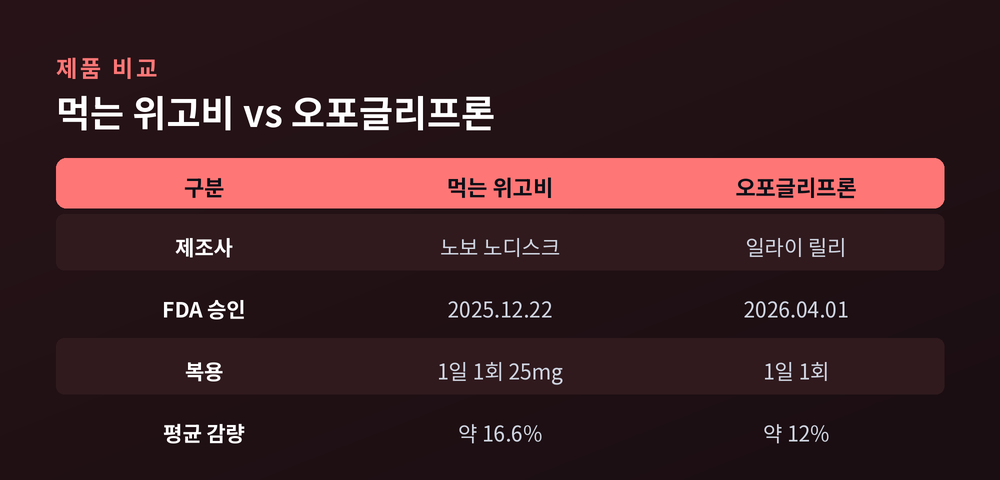
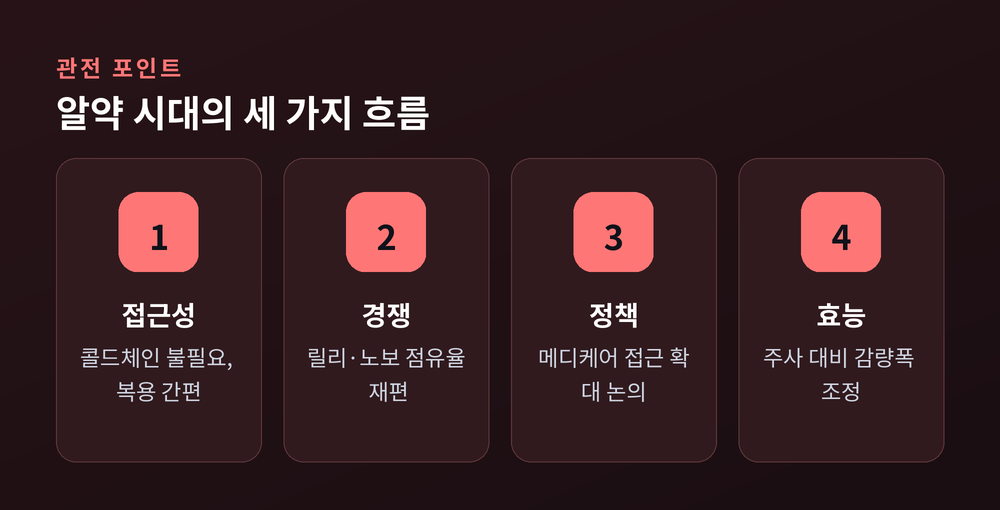

주사에서 알약으로
비만치료제는 오랫동안 주사제의 영역이었다. 2026년, 그 흐름이 알약 쪽으로 기울었다. 편의성이라는 오랜 숙제가 제형 하나로 다시 논의되기 시작했다.
비만치료제 시장의 중심에는 GLP-1 수용체 작용제가 있다. 식욕과 포만감에 관여하는 호르몬 경로를 활용하는 계열이다. 세마글루타이드는 위고비와 오젬픽으로, 티르제파타이드는 젭바운드와 마운자로로 익숙하다.
이들 상당수는 주사제였다. 효과는 인정받았으나 냉장 유통과 자가 주사라는 부담이 따랐다. 주사에 대한 거부감, 주사 부위 반응은 일부 환자에게 실질적인 벽이었다. 알약 제형이 주목받은 이유가 여기에 있다.
전환은 빠르게 진행되었다. 노보 노디스크의 경구용 세마글루타이드, 이른바 먹는 위고비는 2025년 12월 22일 FDA 승인을 받았다. 체중 관리용으로 승인된 최초의 경구 GLP-1 작용제였다. 1일 1회 25mg 복용 방식으로, 2026년 1월 초 미국 시장에 출시되었다.
이어 일라이 릴리의 오포글리프론(제품명 파운다요)이 2026년 4월 1일 승인을 받았다. 소분자 형태로, 시간이나 음식·물의 제약 없이 복용할 수 있는 점이 특징으로 소개되었다.

수치는 신중히 읽을 필요가 있다. 먹는 위고비는 OASIS 4 임상에서 순응 시 평균 약 16.6%의 체중 감소를 보였고, 세 명 중 한 명이 20% 이상 감량했다. 오포글리프론은 최고 용량 72주 시점에서 평균 약 12% 감소를 나타냈다.
주사제의 감량폭이 20%를 넘는다는 점과 비교하면, 현재까지 경구제의 평균 효과는 다소 낮은 경향을 보인다. 편의를 얻는 대신 효과의 폭은 조정되는 구도다.
부작용도 함께 봐야 한다. 오포글리프론의 ATTAIN-1 임상에서 오심이 가장 흔했고, 용량에 따라 오심 약 29~36%, 구토 약 13~24% 수준으로 보고되었다. 대체로 경증에서 중등도였으며, 용량 증량기에 늘었다가 시간이 지나며 감소하는 양상이었다.
접근성 측면의 변화도 크다. 알약은 콜드체인이 필요 없고, 자가 주사 부담이 없다. 오포글리프론은 상업보험과 세이빙스 카드 적용 시 월 25달러 수준, 자가부담 최저 용량은 월 149달러부터로 안내되었다.
시장 구도 역시 재편되고 있다. 일라이 릴리는 미국 외 시장의 GLP-1 점유율에서 노보 노디스크를 앞섰고, 애널리스트들은 GLP-1 시장이 향후 10년간 연 1,500억 달러 규모에 이를 것으로 전망한다. 다만 이 수치는 추정이며, 정책과 공급 상황에 따라 달라질 수 있다.

주사에서 알약으로의 이동은 완결이 아니라 시작에 가깝다. 편의와 효능 사이의 균형을 어떻게 맞출지가 다음 장의 질문으로 남는다.
의학적 판단과 복용 여부는 반드시 전문의와 상담해야 한다.